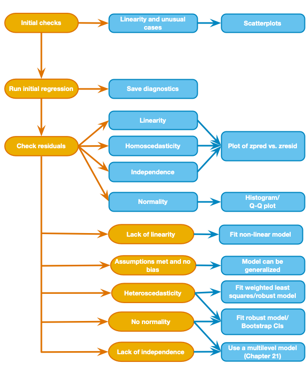

Rows: 200 Columns: 5
── Column specification ────────────────────────────────────────────────────────
Delimiter: ","
chr (1): album_id
dbl (4): adverts, sales, airplay, image
ℹ Use `spec()` to retrieve the full column specification for this data.
ℹ Specify the column types or set `show_col_types = FALSE` to quiet this message.
Rows: 134 Columns: 4
── Column specification ────────────────────────────────────────────────────────
Delimiter: ","
dbl (4): spai, iii, obq, tosca
ℹ Use `spec()` to retrieve the full column specification for this data.
ℹ Specify the column types or set `show_col_types = FALSE` to quiet this message.
Rows: 2506 Columns: 2
── Column specification ────────────────────────────────────────────────────────
Delimiter: ","
dbl (2): hm, suicide
ℹ Use `spec()` to retrieve the full column specification for this data.
ℹ Specify the column types or set `show_col_types = FALSE` to quiet this message.
Fitting the Linear Model
scatterplots to get an idea of whether assumption of linearity is met, look for outliers or other unusual cases
run an initial regression and save the diagnostics
if we want to generalize or test for significance or confidence intervals…
examine residuals for homoscedasticity, independence, normality, and linearity
lack of linearity –> fit a non-linear model
assumptions met and no bias –> Model can be generalized
lack of independent errors –> multi-level model
all other situations –> fit a robust version of the model using bootstrapping (small samples) or robust standard errors

General process of fitting a linear model from discovr_08
it is clear from the bottom left scatterplot and the correlation (\(r=0.58\)) that a positive relation exists. More advertising money spent leads to greater album sales.
some albums sell well regardless of advertising (top-left of scatterplot)
no albums sell badly when adverts are high (bottom-right of scatterplot)
to fit a linear model, we use lm() function my_model <- lm(outcome ~ predictor(s), data = tibble, na.action = an action)
my_model is the name of the model
outcome is the name of the outcome variable (sales)
predictor is the name of the predictor variable (adverts) or, a list of variables separated by + symbols
tibble is the name of the tibble containing the data (album_tib)
this function maps directly to the equation for the model
adverts ~ sales maps to \(\text{Sales}_i=b_0+{b_1}{\text{Advertising}_i}+\epsilon_i\) except we ignore the error term and parameter estimates and we replace the = with ~ (which means ‘predicted from’)
album_lm <-lm(sales ~ adverts, data = album_tib, na.action = na.exclude)summary(album_lm)
Call:
lm(formula = sales ~ adverts, data = album_tib, na.action = na.exclude)
Residuals:
Min 1Q Median 3Q Max
-152.949 -43.796 -0.393 37.040 211.866
Coefficients:
Estimate Std. Error t value Pr(>|t|)
(Intercept) 1.341e+02 7.537e+00 17.799 <2e-16 ***
adverts 9.612e-02 9.632e-03 9.979 <2e-16 ***
---
Signif. codes: 0 '***' 0.001 '**' 0.01 '*' 0.05 '.' 0.1 ' ' 1
Residual standard error: 65.99 on 198 degrees of freedom
Multiple R-squared: 0.3346, Adjusted R-squared: 0.3313
F-statistic: 99.59 on 1 and 198 DF, p-value: < 2.2e-16
note \(df=1\) and \(df.residual=198\) therefore we can say that adding the predictor of advertising significantly improved the fit of the model to the data compared to having no predictors in the model
output provides estimates of the model parameters (\(\hat{b}\)-values)
\(Y\) intercept (\(b_0\)) is 134.14 (when \(X\) is 0, sales will be 134140)
\(X\) (\(b_1\)) is 0.096.
represents the change in outcome associated with a unit change in predictor.
when the predictor increases by 1, the outcome increases by .096, but since the units of measurement was thousands of pounds and thousands of sales, an increase in $1000 will lead to 96 more albums sold
not very good return
BUT, we know that advertising only accounts for 1/3 of the variance
If a predictor is having a significant impact on our ability to predict the outcome, then \(\hat{b}\) should be different from 0 and large relative to its standard error
the \(t\)-test (labelled statistic) and the associated \(p\)-value tell us whether the \(\hat{b}\) is significantly different from 0
the column p.value contains the exact probability that a value of \(t\) at least as big as the one in the table would occur if the value of \(b\) in the population were 0
if this propbability is less than 0.05, then we interpret that as the predictor being a significant predictor of hte outcome.
for both \(t\)s, the probabilities are in scientific notation
2.91e-19 means \(2.91*10^{-19}\), or move the decimal 19 places to the left or 0.000000000000000000291
2.91e+19 means \(2.91*10^{19}\), or move the decimal 19 places to the right or 29100000000000000000
Imagine we collect 100 samples of data measuring the same variables as the current model, then estimate the same model, including confidence intervals for unstandardized values.The boundaries are constructed such that 95% of our 100 samples contain the population value of \(b\). 95 of 100 sample will yield confidence intervals for \(b\) that contain the population value, but we don’t know if our sample is one of the 95.
We might just assume that it does, but if the confidence interval contains 0, then there is a possibility that there is no relationship, or the relationship might be negative. The trouble is that we would be wrong 5% of the time.
If the interval does not contain 0, we might conclude there is a genuine positive relationship.